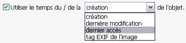
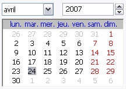
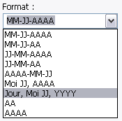
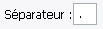
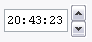
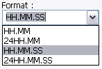

Au lieu de donner une date et heure fixe, il est possible d'utiliser certaines informations contenues
par le fichier ou le dossier, sans perdre tous les outils de formats disponibles.
Notez :
Sur les systèmes de fichiers POSIX (Linux, OS X, BSD, etc), il n'y a pas de temps de création,
car ceci n'existe pas sur ces systèmes. Par contre, il y a Changement des Métadonnées (ctime) qui est le
temps du dernier changement (mais pas nécessairement modification - i.e. changer les permissions d'un fichier
changera les métadonnées sans changer le temps de modification)

Le Calendrier est utilisé pour régler la date, par défaut il est à jour.

Voici les formats inclus par défaut pour la date. Il est aussi possible d'utiliser votre propre
format, simplement en écrivant dans la zone texte.

Le Séparateur détermine quel caractère sera utilisé pour séparer les composants de la date lorsqu'un
format inclut par défaut est utilisé.

La case Heure montre l'heure du lancement de l'application, mais peut-être manipulée en cliquant sur
une partie intéressante puis en cliquant sur les fléchettes.
Le bouton Mettre à l'Heure fait exactement ce qu'il indique.

Voici les formats inclus par défaut pour l'heure. Il est aussi possible d'utiliser votre propre
format, simplement en écrivant dans la zone texte.
Le Séparateur détermine quel caractère sera utilisé pour séparer les composants de l'heure lorsqu'un
format inclut par défaut est utilisé.